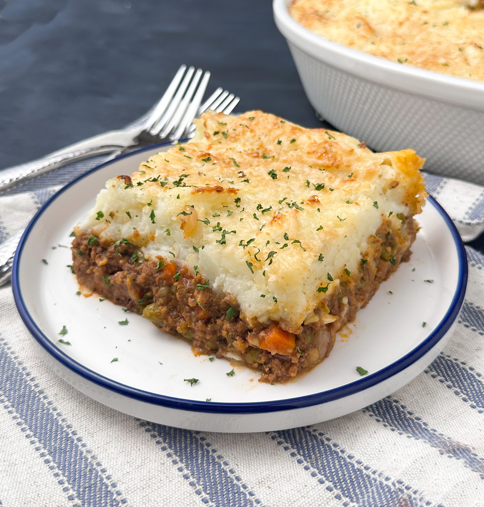

Back To Home
Beef Shepherd’s Pie

Description
A savory, comforting dish of seasoned minced beef and vegetables topped with golden baked mashed potatoes.
Follow the steps below to prepare the ingredients and bake this dish to perfection.
Ingredients
Filling
- 500g ground beef
- 1 onion(chopped)
- 2 cloves garlic (minced)
- 1 cup frozen peas and carrots
- 2 tbsp tomato paste
- 1 tbsp flour
- 1 cup beef broth
- salt
- pepper
Potato Topping
- 4 large potatoes (peeled and cubed)
- 3 tbsp butter
- ¼ cup milk
- ½ cup shredded cheddar cheese (optional)
- salt
- pepper
Now Steps to make dish of Beef shepherd's Pie
Steps To Follow
- Make mashed Potatoes: Boil potatoes in salted water until tender (about 15 minutes).Drain and mash with butter,milk,salt and pepper until smooth
- Cook Beef Filling:In a skillet over medium heat,brown ground beef with onion and garlic. Drain excess fat. Stir in tomato paste and flour, then pour in beef broth and frozen peas/carrot. Simmer for 5 minutes until thickened.
- Assemble & Bake: Preheat oven to 2000C (4000F).Spread the beef mixture evenly into a baking dish. Top with mashed potatoes,smoothing with a spatula (and sprinkling with cheddar cheese if using ).Bake for 20 minutes until the top is golden.